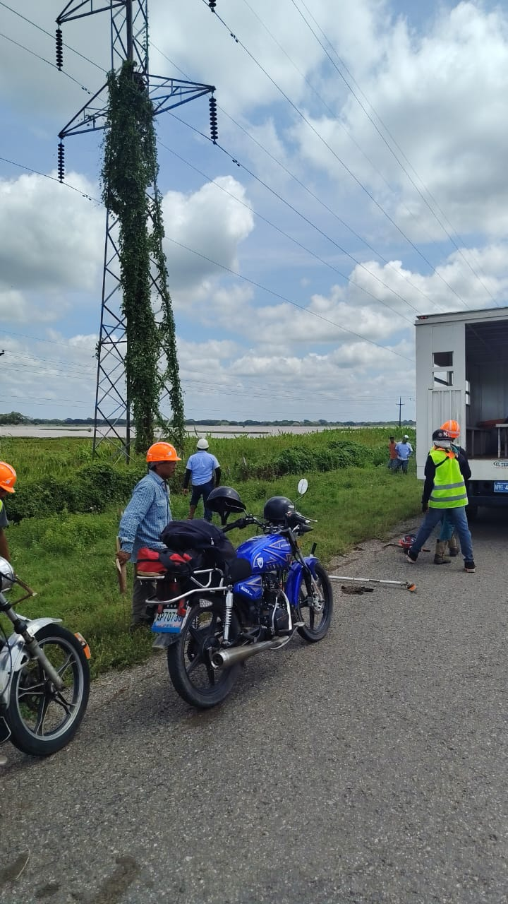

Proyecto LT San Fernando 1 - Guayabal

Avance de Limpieza de Torres:
Fecha de reporte: 12/10/2026
Torres atendidas: 5 / 96
Total hectáreas aproximadas: Por calcular...
Porcentaje de avance: 5%
Reporte Detallado de Control de Vegetación
📊 Ver Tabla Online ⬇️ Descargar ExcelFiltrar por Semana
Etapa de Limpieza General